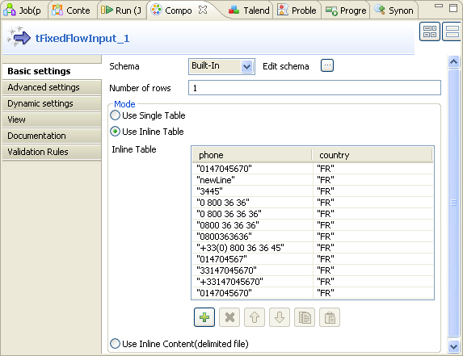
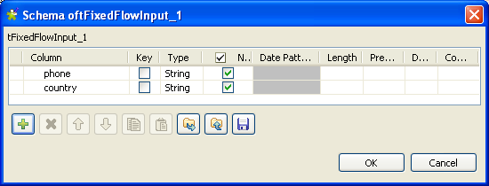
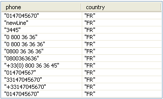
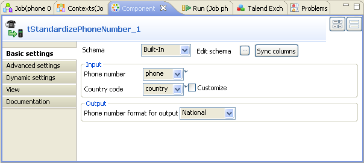

![[Warning]](../images/warning.png) | |
This component will be available in the Palette of the studio on the condition that you have subscribed to the relevant edition of Talend Enterprise Data Quality . |
|
Component family |
Data quality | ||||
|
Function |
This component receives phone number data from its preceding component and formats and standardizes these numbers using a built-in Google libphonumber library. | ||||
|
Purpose |
This component standardizes phone numbers according to given formats. | ||||
|
Basic settings |
Schema and Edit schema |
A schema is a row description, i.e., it defines the number of fields that will be processed and passed on to the next component. The schema is either built-in or remote in the Repository. This component provides default columns. For further information, see section the section called “Default columns”. | |||
|
|
|
Built-in: You create the schema and store it locally for this component only. Related topic: see Talend Enterprise Studio User Guide. | |||
|
|
|
Repository: You have already created the schema and stored it in the Repository. You can reuse it in various projects and job designs. Related topic: see Talend Enterprise Studio User Guide. | |||
|
|
Phone number |
Select the column holding the phone numbers of interest from the input data. | |||
|
|
Country code |
Select the column holding the country codes (ISO 2) from the input data.
| |||
Customize | Select this check box to set a custom country code (ISO 2). Once selected, it disables the Country code field and gives priority to the customized country code for phone number standardization. For example, if the input data provides a set of phone numbers with a wrong country code or alternatively with no country code, then you can select this check box and type in the country code you need for standardization. | ||||
|
|
Phone number format for output |
Select the format to be used to standardize the phone numbers of interest. The available options are: - E164 - International - National | |||
|
Advanced settings |
Avoid comparison |
Select this check box to deactivate the comparison performed between the input and the output data at runtime. This could accelerate the execution process of the Job using this component. | |||
|
|
tStatCatcher Statistics |
Select this check box to collect log data at the component level. | |||
|
Usage |
This component is an intermediary step. It requires an input flow as well as an output. | ||||
|
Limitation |
n/a | ||||
![[Note]](../images/note.png)
The following table presents details about the default columns provided by tStandardizePhoneNumber.
|
Columns |
Description |
|---|---|
|
StandardizedPhoneNumber |
This column presents the standardized phone numbers. |
|
IsValidPhoneNumber |
This column indicates whether a phone number processed is recognized as valid. |
|
IsPossiblePhoneNumber |
This column indicates whether a phone number processed is supposed to be valid. |
|
IsAlreadyStandard |
This column indicates whether a phone number processed is already standardized after comparing it with the output standardized phone number. |
|
PhoneNumberType |
This column indicates the type of a processed phone number, such as fixed line, toll free, etc. |
|
ErrorMessage |
This column presents the relative error message if a phone number is unrecognizable. |
In addition to these default columns, you need to define more columns alongside in order for this component to receive the corresponding input data.
In this scenario, you use three components to standardize some French phone numbers according to the French phone number format.
The components to be used are:
tFixedFlowInput: this component is used to provide the input data composed of phone numbers to be processed and the French country code (FR).
tStandardizePhoneNumber: this component standardizes the phone numbers of interest.
tLogRow: this component displays the result of this standardization.
To replicate this scenario, proceed as the following sections illustrate:
To do this, proceed as follows:
Drop tFixedFlowInput, tStandardizePhoneNumber and tLogRow from the Palette to the Design workspace.
Right-click the tFixedFlowInput component to open the contextual menu and select Row > Main.
Do the same to connect tStandardizePhoneNumber to tLogRow using a Row > Main link.
Then you can continue to configure these components.
To do this, proceed as follows:
Double click tFixedFlowInput to open its Component view.
Next to Edit schema, click the three-dot button to open the schema editor.
Click the plus button to add two rows.
In the Column column, rename these two newly added rows. In this scenario, name them phone and country respectively.
Click OK to validate these changes and accept the propagation prompted by the dialog box that pops up.
In the Mode area, select the Use Inline Table option to display the Inline Table.
Under this table, click the plus button to add as much number of rows as you need. In this scenario, add 12 rows.
In this table, type in, between quotation marks, phone numbers of various formats and the corresponding ISO 2-letter country code in the phone and the country columns respectively. In this scenario, they read as follows:

To do this, proceed as follows:
Double click tStandardizePhoneNumber to open its Component view.
If required, click Sync columns to retrieve the schema from the previous component.
In the Phone number field, select phone from the drop-down list as this column holds the phone numbers to be processed.
In the Country code field, select country from the drop-down list as this column provides the country code to be used. In this scenario, this code is the French country code FR.
In the Phone number format for output field, select National as you need to standardize these phone numbers according to the national standard format of France.
Press F6 to run this Job.
You can read the execution result in the console of the Run view.
From this result table, you can find that the first input record 0147045670, for example, is standardized as 01 47 04 56 70 according to the French phone number format and this number is of FIXED LINE.